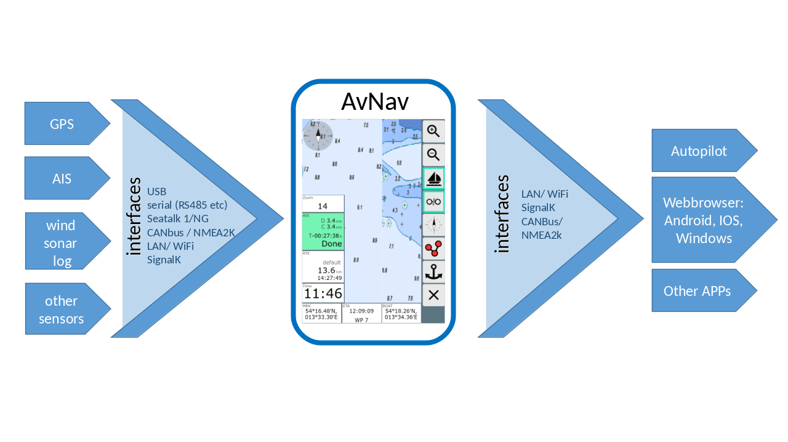

Important Hint: In no case I promise or can be held responsible for correct function of AvNav - especially using it for navigation is at your own risk. Before using it I recommend to carefully test the precision of the display and the used charts.
A detailed description of the concepts can be found in the chapter introduction.
AvNav has been designed to be usable on touch devices (also with relatively small screens). The idea was to allow ease of use also under restricted "on board" conditions.
Of course you can operate AvNav by mouse and keyboard as well.
AvNav is available in 2 variants:
AvNav is available as package for
various Linux distributions (Debian packages, Rpm) and as a Windows
installer.
The Debian packages are hosted in a repository
but they can be downloaded from the release page
as well.
Additionally we maintain images for the
Raspberry Pi. A detailed documentation is available in the chapter installation.
After installing and starting up you can use your browser to connect to
AvNav and open the WebApp.
If you are using our images the raspberry will establish a Wifi network
(name and password can be adapted). For details on how to connect to your
server refer to the image documentation.
If you are connected to the server differently you can adress
http://avnav.local:8080 (does not work on android) - or you can use the IP
of the server.
For IOS and Android devices I would recommend using a Bonjour
Browser. This tool can find the AvNav servers in the local network and
will start a browser without the need of entering an address.
The App is available in the Play
Store 
After installing AvNav (or when using a ready to go image) you can normally start without any additional configuration. AvNav will scan USB interfaces for serial adapters and will try to determine the appropriate baud rate. Depending on the kind of installation a udp receiver is active on port 34667.
To adapt the AvNav server configuration you can use the server/status page. Additionally you can adapt the look and feel with settings, layout adaptation and with user defined code/CSS and plugins.
With the Android installation, all settings are directly integrated in the App.

AvNav processes NMEA0183 Data from connected USB devices, serial ports, bluetooth devices, TCP (client and server) or UDP. A NMEA multiplexer is integrated allowing for flexible configuration of the flow of received and sent data.
A couple of NMEA sentences are decoded within AvNav (position data, AIS,...) and used for it's display and routing functions.
In combination with Canboat and SignalK you can also handle NMEA2000 data. Additionally you can use all your own vessel's SignalK data to be displayed within AvNav.
The following NMEA sentences are decoded:
In combination with Canboat and
SignalK NMEA2000 data can be received and processed too. All own
vessel data available in SignalK can be displayed in AvNav.
Since 20220421 AvNav can directly receive it's navigation data from
SignalK.
On Android you can utilize the internal GPS. Additionally you can have a TCP or bluetooth connection for receiving GPS or AIS data. If your Android device has USB-OTG available you can connect an USB-serial adapter as well.
The following NMEA sentences will be decoded:
AvNav generally handles raster charts. You can download them from various internet sources (e.g. OpenSeaMap or NOAA) - or you can use software like MobileAtlasCreator or SASPlanet to download/create charts.
AvNav can directly process charts in gemf and mbtiles formats. Additionally you can convert other types of raster charts like BSB (kap). This can be done directly on the server (raspberry) - or better beforehand on a desktop system.
Additionally AvNav can process oeSENCcharts from o-charts - on Android with the avocharts app (ochartsng). The company offers charts for Open Source Software at reasonable prices.
With the ochartsng plugin AvNav can also display free S57 charts (after conversion).
Charts need to be uploaded to AvNav before being usable - at the Files/Download page, section charts
 .
o-charts must be uploaded via the o-charts
plugin / ochartsng plugin
.
o-charts must be uploaded via the o-charts
plugin / ochartsng plugin
Using the mapproxy-plugin AvNav can include various online chart sources. Areas of those charts can be downloaded with the plugin for offline usage.
More details in the chapter charts.
At the Navigation page the boat position, it's course, the route to the next waypoint, the current route, AIS targets and their courses, navigation circels and defined overlays will be shown on the chart.
At the Navigation page, inside the Route Editor and at up to 5 Dashboard pages you can display the values of all available navigational data. These include values from SignalK.
You can use simple numeric displays, analog gauges or graphical displays.
The displays can be adapted to your preferences. There is a Layout Editor and you can create / modify displays with some lines of Java Script Code and CSS.
You can define different sets of display "layouts" and store them on the AvNav server. For each display device you can select the set ("layout") that you would like to use.
There is also an adaptation to different screen sizes available in the layout ("small").
You can easily create and edit routes within AvNav. You will use the chart view at the Route Editor. Normally you just drag the center of the chart (cross) to the next point you would like to add. With a button click you add this to the route. You can easily move, edit or delete points within the route.
Waypoints or other routes that are shown as overlays can be added to the route.
You can invert the route or empty it. Within AvNav routes are stored as gpx files. You can export or import them at the Files/Download page. From within the Route Editor you can immediately start the route navigation. When following a route an alarm will be raised as you reach the next waypoint (if you are within an "approach" distance) and AvNav will automatically switch to the next waypoint.
Since version 20220819 AvNav can handle two different routing modes.
To switch the modes use the Router at the  server/status
page. For the
server/status
page. For the  measure tool you can set the mode separately in the
settings of the App (at Navigation/Measure Display RhumbLine). This way
you can easily compare the two pathes.
measure tool you can set the mode separately in the
settings of the App (at Navigation/Measure Display RhumbLine). This way
you can easily compare the two pathes.
To trigger the automatic switch to the next waypoint two conditions must be meat simultaneously:
AvNav is records the current track displaying it on the chart. To minimize the number of trackpoints they will just be recorded after major changes of position or after a given time interval (see Configuration ANVTrackWriter). The tracks will be output as gpx file at regular intervals. They can be exported and imported at the Files/Download page (on that page you can also see their metadata like length and time). Every day a separate gpx file is created. Available tracks can be displayed as overlay on the chart.
You can as well convert a track into a route. There is some program logic implemented to reduce the number of points.
On your chart there will be a display of the AIS targets within a defined range (default: 20nm) with their positions and courses. CPA (closest point of approach) of AIS targets will be computed and a warning issued if a defined minimum distance is not kept.
For details refer to the navigation page.AvNav can trigger alarms for:
All alarms will be handled on the AvNav server. So you may switch off all display devices, still any alarm handling (like e.g. anchor watch) will continue to work.
You can assign a sound (both at the server and at display devices) to the alarm. At the server you can trigger definable commands whenever an alarm is raised (see example). The configuration is handled within the configfile - AVNAlarmHandler.
At the Main page you can active the
night mode  .
All pages will be adapted accordingly.
.
All pages will be adapted accordingly.
AvNav is able to control display functions on one device from another one - or from the server. For details refer to the description .
You can adapt AvNav to your personal needs by various means. As all pages are handled within a browser you can use CSS to customize your display.
The server configuration is defined by the file avnav_server.xml. Typically there is no need for editing this file directly. Instead you should use the server/status page to change the settings.
Beside adapting the displays with the Layout editor you can easily setup your own custom displays with some Java Script.
You can also include the display of other web pages (external ones or pages you created within AvNav). This will be handled as "User Apps".
The symbols that are used for various displays can be customized with a json file - like the keybord short cuts.
With Python, Java Script and CSS you can write plugins.